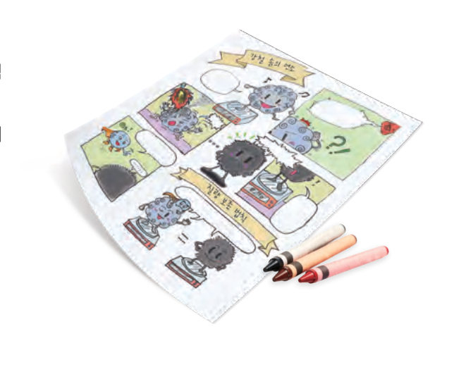

살아있는 교과서 · Ⅰ. 화학 반응의 규칙과 에너지 변화 · 2. 화학 반응의 규칙 · 03 34~37쪽
일정한 부피비가 성립하는 기체 반응
암모니아가 생성될 때 질소와 수소의 부피비는 얼마일까? 부피 상자 모형으로 계수비와 부피비를 비교하고, 가상 기체 반응 장치에서 수소와 산소를 '펑!' 반응시켜 부피 관계를 확인해 보자.
🎯 이 단원을 배우면 — 기체의 반응에서 기체 사이에는 일정한 부피비가 성립함을 설명하고, 이를 실험으로 확인할 수 있다.
교과서기체가 반응할 때 기체의 부피 사이에는 어떤 관계가 있을까? 34쪽
34쪽질소 기체와 수소 기체가 반응하게 해 볼까? 암모니아가 생성될 때 반응하거나 생성되는 기체의 부피비는 얼마일까?
일정한 온도와 압력에서 기체가 반응하여 새로운 기체를 생성할 때 각 기체의 부피 사이에는 간단한 정수비가 성립하는데, 이를 기체 반응 법칙이라고 한다. 예를 들어 암모니아 기체가 생성될 때 질소 기체, 수소 기체, 암모니아 기체 사이의 부피비는 항상 1 : 3 : 2로 일정하다. 또, 수증기가 생성될 때 수소 기체, 산소 기체, 수증기 사이의 부피비는 항상 2 : 1 : 2로 일정하다. 이때 기체 사이의 부피비는 화학 반응식에서 계수비와 같다.
부피 상자 모형같은 온도·압력에서 같은 부피에는 같은 수의 기체 분자가 들어 있다
1암모니아 생성 반응 N₂ + 3H₂ → 2NH₃ 에서 질소 : 수소 : 암모니아의 부피비는 이고, 수증기 생성 반응 2H₂ + O₂ → 2H₂O 에서 수소 : 산소 : 수증기의 부피비는 이다.
2수증기 생성 반응에서 수소 기체 : 산소 기체 : 수증기의 분자 수의 비는 부피비와 .
탐구 수행기체 반응에서의 부피 관계 35쪽
35쪽기체 반응 실험 장치 — 주입한 기체 · 꼭지 · 점화기
기체 반응 실험 장치에 주사기를 이용하여 수소 기체를 10 mL 넣는다. (장치에 기체를 넣은 다음 꼭지를 잠그고, 기체의 종류에 따라 주사기를 바꾸어 사용한다.)
산소 기체를 5 mL 넣고, 점화기를 눌러 기체가 반응하게 한다.
더 이상 반응이 일어나지 않을 때까지 과정 2를 반복한다.
수소 기체를 20 mL로 하여 과정 2, 3을 반복한다.
⚠️ 수소 기체는 열로부터 멀리하고, 환기가 잘되는 곳에서 취급한다. 수소 기체와 산소 기체가 폭발적으로 반응하므로 장치에 기체를 일정량 이상 넣지 않는다.
가상 기체 반응 장치산소를 5 mL씩 넣고 점화해 보자
수소의 양을 정하고 시작하세요. 기체가 반응하면 '펑' 소리가 나면서 피스톤이 움직여요.
1수소 기체 10 mL와 반응한 산소 기체는 mL이고, 수소 기체 20 mL와 반응한 산소 기체는 mL이다.
2정리하기 수증기 생성 반응에서 반응하는 수소 기체 : 산소 기체의 부피비는 로 일정하다.
평가 기준
스스로 평가
탐구 기능 기체의 부피를 정확하게 측정하였는가?
탐구 기능 반응하는 기체 사이의 부피 관계를 옳게 설명하였는가?
인성 실험 과정에서 안전에 유의하였는가?
🧩 세 번째 열쇠 (35쪽)
수증기가 생성될 때 수소 기체, 산소 기체, 수증기 사이의 부피비는 ( )이다.
스스로 확인하기34쪽 학습 목표를 달성했는지 확인해 보자 35쪽
1일정한 온도와 압력에서 기체가 반응하여 새로운 기체를 생성할 때 각 기체의 부피 사이에는 간단한 정수비가 성립하는데, 이를 법칙이라고 한다.
2과학적 사고력 메테인(CH₄) 25 L가 완전히 연소할 때 (CH₄ + 2O₂ → CO₂ + 2H₂O) 발생하는 이산화 탄소의 부피는 L이다. (단, 온도와 압력은 반응 전후가 같다.)
STEAM · 의사소통화학 반응의 규칙을 만화로 표현하기 36쪽

36쪽화학 반응의 규칙을 소개하는 만화 그리기
질량 보존 법칙, 일정 성분비 법칙, 기체 반응 법칙 중 한 가지를 선택한다.
선택한 화학 반응의 규칙의 개념을 확인하고, 만화의 줄거리를 구상한다.
구상한 줄거리를 바탕으로 만화를 그리고 발표한다.
💬내가 고른 규칙과 만화 4 컷의 줄거리를 적어 보자.
🔑열쇠 모으기 수소가 연소하는 데 필요한 산소의 양을 어떻게 알 수 있을까? 세 열쇠를 모아 '질량 보존 법칙, 일정 성분비 법칙, 기체 반응 법칙'을 사용하여 내 생각을 써 보자.
개념 확인일정한 부피비가 성립하는 기체 반응
1일정한 온도와 압력에서 기체가 반응하여 새로운 기체를 생성할 때 각 기체의 부피 사이에는 간단한 정수비가 성립하는데, 이를 법칙이라고 한다.
✔옳으면 O, 옳지 않으면 X
⑴ 기체 반응 법칙에 따르면 반응하거나 생성되는 기체 사이에는 일정한 부피비가 성립한다.
⑵ 기체 사이의 반응에서 각 기체의 부피비는 질량비와 같다.
⑶ 기체의 반응에서 각 기체의 부피비는 화학 반응식에서 계수비와 같다.
3수소 기체와 산소 기체가 반응하여 수증기가 생성될 때 ⑴ 부피비(수소 : 산소 : 수증기)는 이다. ⑵ 이와 관련 있는 법칙은 이다. ⑶ 수소 기체 30 mL가 완전히 반응할 때 반응하는 산소 기체는 mL, 생성되는 수증기는 mL이다.
4질소 기체 40 mL와 수소 기체 60 mL가 반응하였더니 암모니아 기체 40 mL가 생성되고, 질소 기체 20 mL가 남았다. 부피비(질소 : 수소 : 암모니아)는 이다.
5수소 기체 10 mL와 염소 기체 30 mL가 반응하였더니 염화 수소 기체 20 mL가 생성되고, 염소 기체 20 mL가 남았다. 부피비(수소 : 염소 : 염화 수소)는 이다.
실험
반응 전 기체의 부피(mL)
생성된 기체 C(mL)
반응 후 남은 기체(mL)
A
B
1
10
50
20
B, 20
2
40
60
40
A, 20
6표는 기체 A와 기체 B가 반응하여 기체 C가 생성될 때의 부피 관계이다. ⑴ 반응하는 기체와 생성되는 기체의 부피비 A : B : C = ⑵ 기체 A 50 mL와 기체 B 90 mL가 완전히 반응하였을 때 생성되는 기체 C는 mL이고, 반응하지 않고 남는 기체는 mL이다.
스스로 정리하기2. 화학 반응의 규칙 37쪽
3기체 반응 법칙
⑴ 기체 반응 법칙: 일정한 온도와 압력에서 기체가 반응하여 새로운 기체를 생성할 때 각 기체의 사이에는 간단한 정수비가 성립한다. — 예) 수증기 생성 2H₂ + O₂ → 2H₂O, 부피비 ⑵ 반응물과 생성물이 기체인 반응에서 기체 사이의 부피비는 화학 반응식의 와 같다.
✔옳으면 O, 옳지 않으면 X
⑴ 기체가 발생하는 반응에서는 질량 보존 법칙이 성립하지 않는다.
⑵ 화합물이 생성될 때 결합하는 원자의 개수비는 항상 일정하다.
⑶ 기체의 반응에서 반응하는 기체의 부피를 합하면 항상 생성되는 기체의 부피와 같다.
✔다음 설명과 관련된 법칙을 고르시오.
⑴ 질소 기체 10 L와 수소 기체 30 L가 반응하면 암모니아 기체 20 L가 생성된다.
⑵ 구리 8 g이 모두 반응하여 산화 구리(Ⅱ)를 생성할 때 필요한 산소의 최소 질량은 2 g이다.
⑶ 탄산 나트륨 수용액 5 g과 염화 칼슘 수용액 5 g이 반응하여 생성된 물질의 총질량은 10 g이다.
평가 기준
스스로 평가
기체의 반응에서 기체 사이에는 일정한 부피비가 성립함을 설명할 수 있다.
이를 실험으로 확인할 수 있다.
질량 보존 법칙, 일정 성분비 법칙, 기체 반응 법칙을 구분하여 설명할 수 있다.
제출학생 정보 · 제출하기
모든 활동을 마친 뒤 제출하면 전체가 한 번에 채점되고 피드백이 나타나요. 답안은 선생님 스프레드시트(중3 탭)에 기록돼요.